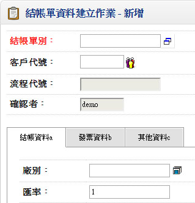
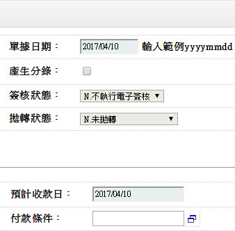
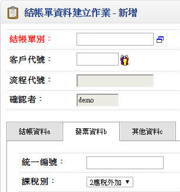
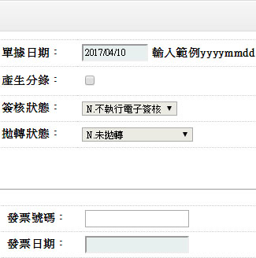
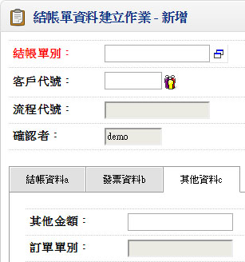
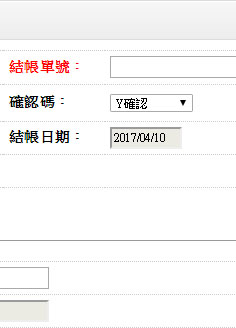
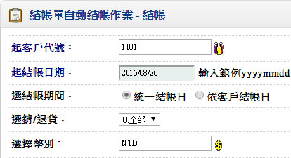
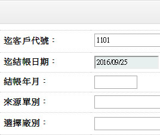
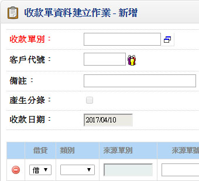
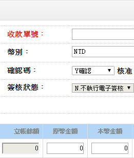

歡迎來到 PHP雲端ERP 的世界
PHP 是開發 雲端ERP 應用程式的工具組。提供簡易的介面和邏輯結構來使用豐富的函式庫，其目的是讓你加 快開發速度。使用 PHP 只需要寫少少的程式，創造力可專注在專案開發。
雲端ERP 使用手冊目錄
三、日常異動以及其他管理
一、結帳單建立作業
■程式代號：ACRI02
■輸入畫面：
 ▼
 ▼
 - ■作業注意事項：
- 結帳單之時機,應於該月份所有銷退貨內容(金額)確定後再執行,結帳日期建議為該銷貨月份之月底
- 結帳單產生之方式有三
- 自行輸入
- 直接結帳:單據性質銷貨單,銷退單自動結帳打勾者
- 自動結帳:由批次作業之結帳單自動結帳作業執行
- 依客戶結帳日
- 依統一結帳日
- 預計付款日及預計兌現日乃依應付憑單日期及廠商基本資料之付款條件之設定推算,如需調整,可自行修改該欄位
- 銷/退貨單結帳單可整張結帳或分批結帳
- 來源序號”空白”表示為整張結帳
- 來源序號”不為空白”表示分批結帳
- 已存在之結帳單，其對應的銷/退貨記錄不可修改
- 結帳單之日期對應收帳款之管理非常重要,本系統對於應收帳款之認定均以本日期為基準
- ■欄位說明：
- 幣別(TA009)
- 原幣差額
- 預計收款日=憑單確認日期+廠商基本資料檔中付款條件所設定之預計收款日(加日、加月擇其一計算)，可修改日期
- 預計兌現日=預計收款日+廠商基本資料檔中付款條件所設定之預計兌現日(加日、加月擇其一計算)，可修改日期
- 結案碼
- 當已收金額=應收總計時自動預設為’Y’
- 來源別
- 1.銷貨2.銷退3.營業日報4.資產出售5.預收待抵6.訂單7.維修9.其他
- 來源單別
- 若來源別=1銷貨 2.銷退 4.資產出售 或 6.訂單者 此欄位不可空白
- 原幣差額
- 若結帳時認列銷貨折讓,則結帳金額與原銷貨單金額之差額呈現於此,不可修改
二、結帳單自動結帳作業
■程式代號：ACRB01
■輸入畫面：
 - ■作業注意事項：
- 依客戶結帳日期之結帳作業
- EX:客戶結帳日期=25日(客戶基本資料建立作業需輸入)
結帳月份 10月
表示9/26至10/25日之銷貨單及銷退單產生於結帳單 - 依統一結帳日之結帳作業
EX:起始結帳日期 89/09/01
截止結帳日期 89/09/30
表示09/01至09/30日之銷貨單及銷退單產生於結帳單 - 依統一結帳日之結帳作業
- 若銷貨單或銷退單之客戶代號其於[客戶基本資料建立]中[總公司請款]="Y"則以[總店號]成立結帳單
- 當銷貨單或銷貨單之發票號碼不相同則分別立帳至不同之結帳單
- 若銷貨單或銷退單之發票號碼為空白時結於同一張結帳單
- ■欄位說明：
- 同客戶不同廠別是否分開結帳
若該客戶於當月份與本公司台中廠及台北廠分別有交易,結帳時是否產生於同一張結帳單,或者分開產生兩張結帳單 - 同客戶不同收款業務員是否分開結帳
若該客戶銷售時為不同業務員收款,是否將結帳單資料分開,以利後續收款作業
三、收款單建立作業
■程式代號：ACRI03
■輸入畫面：
 - ■作業注意事項：
- 結帳單可分批次收款
- 收款沖帳時可用不同幣別沖帳
- 收款單輸入完畢須確保單尾之”本國幣差額”=0
- 收款單之會計科目可由基本資料建立->會計科目建立預設:
一般:一般收款科目
票據:若應收票據科目空白,預設『客戶基本資料』之應收票據科目
差額:若單尾尾差>0,表示借餘,預設貸方差額科目
單尾尾差<0,表示貸餘,預設借方差額科目
折讓:折讓科目 - 收款單建立
- 收票據
- 借-[票據 應收票據]
- 貸-[沖帳 應收帳款]
- 收現金OR 匯款
- 借-[一般 銀行存款]
- 貸-[沖帳 應收帳款]
- ■欄位說明：
- 幣別
- 幣別”空白”表付款沖帳時不分幣別
EX:單頭幣別”空白”,可沖任何幣別之結帳單 - 若幣別欄位”非空白”，則單身各筆資料皆需為此一相同幣別
EX:單頭幣別為”NT$”,則只能沖”NT$”之結帳單